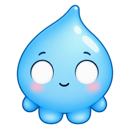
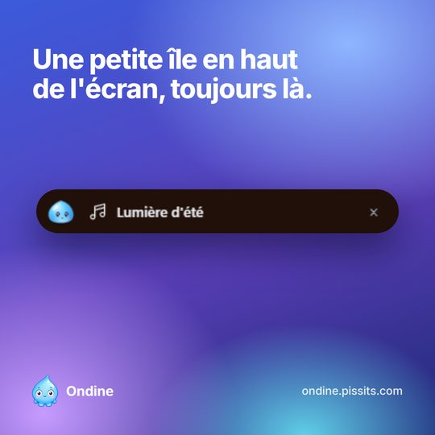
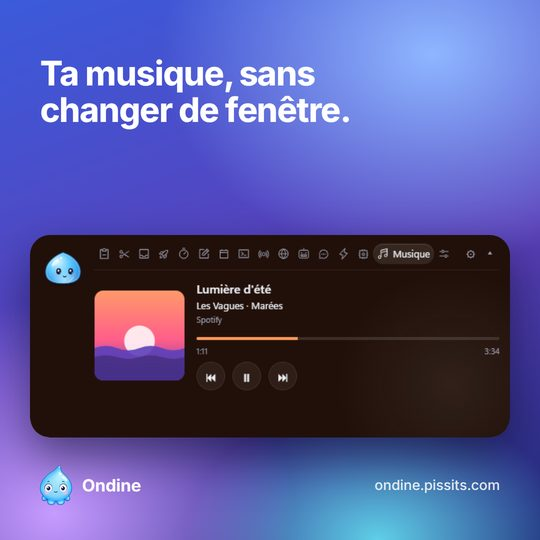
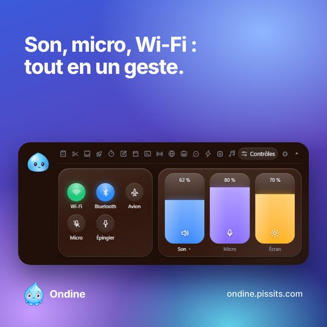
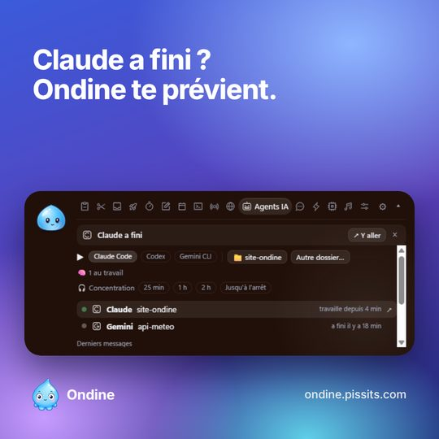
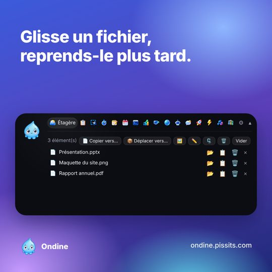
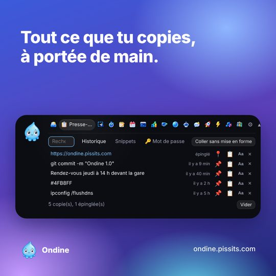

Ondine
Une petite île en haut de ton écran Windows. Musique, notes, minuteurs, outils et agents IA, sans changer de fenêtre.
Tout ce qu'il te faut, juste au-dessus.
L'île reste discrète en mini et s'ouvre au survol. Chaque module se règle ou se cache dans les réglages.






ÉtagèreGlisse un fichier, reprends-le plus tard.
Presse-papiersHistorique et extraits réutilisables.
Captures et OCRCopie le texte d'une image.
Minuteur et agendaTon prochain rendez-vous d'un coup d'œil.
Outils ITSystème, réseau, accès distants.
ContrôlesSon, micro, luminosité, Wi-Fi.
Tes agents IA te font signe.
Quand un agent a fini ou attend ta réponse, Ondine te prévient dans l'île. Un clic et tu retournes dans le bon terminal.
Claude Code
Codex
Gemini CLI